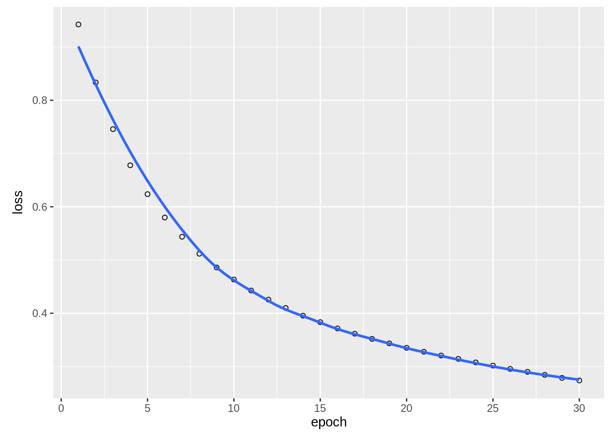
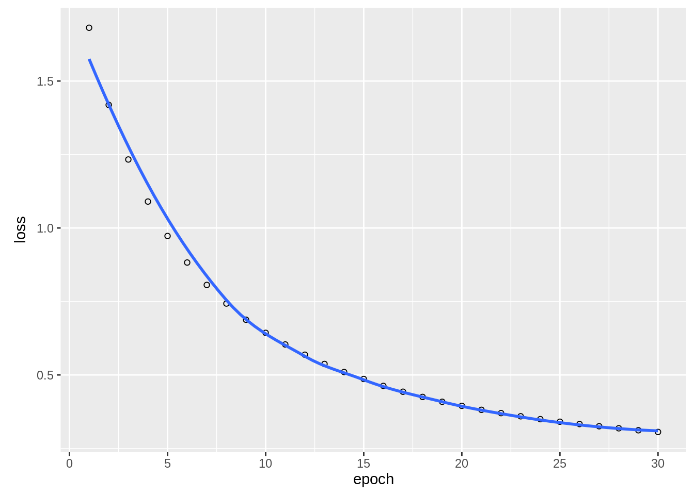

3 Fundamental principles and techniques
3.1 Machine learning principles
3.1.1 Optimization
from wikipedia: " an optimization problem is the problem of finding the best solution from all feasible solutions"
Why do we need this “optimization”?
A loss function (e.g. we tell in each training step the algorithm how many observations were miss-classified) guides the training of ML algorithms
Based on the loss, the optimizer tries to update the weights of the ML algorithms in a way that the loss function is minimized
Calculating analytically the global optima of a function is a non-trivial problem and bunch of diverse optimization algorithms evolved
Some optimization algorithms are inspired by biological systemse.g. Ants, Bee, or even slimve algorithms):
3.1.1.1 Small optimization example
We have the following function:
func = function(x) return(x^2)which we want to minimize, we could do this by hand:
a = rnorm(100)
plot(a, func(a))The smallest value is at x = 0 (to be honest, we can calculate this for this simple case analytically)
We can also use an optimizer with the optim(…) function
opt = optim(1.0, func)## Warning in optim(1, func): one-dimensional optimization by Nelder-Mead is unreliable:
## use "Brent" or optimize() directlyprint(opt$par)## [1] -8.881784e-16opt$par will return the best values found by the optimizer
3.1.1.2 Advanced optimization example
We will now optimze the weights (slopes) for linear regression model.
Basically, we will implement lm(y~x) on our own:
Load the airquality dataset, remove NAs, split it into predictors and response, and scale the predictors:
data = airquality[complete.cases(airquality$Ozone) & complete.cases(airquality$Solar.R),]
X = scale(data[,-1])
Y = data$OzoneThe model we want to optimize: \(ozone = Solar.R*X1 + Wind*X2 + Temp*X3 + Month*X4 + Day*X5 + X6\)
Our loss function: mean(predicted ozone - true ozone)^2)
We found to find the parameters X1-X6 for which the loss function is the smallest:
linear_regression = function(w) {
pred = w[1]*X[,1] + # Solar.R
w[2]*X[,2] + # Wind
w[3]*X[,3] + # Temp
w[4]*X[,4] + # Month
w[5]*X[,5] +
w[6] # or X %*% w[1:5] + w[6]
# loss = MSE, we want to find the optimal weights
# to minimize the sum of squared residuals
loss = mean((pred - Y)^2)
return(loss)
}The linear_regression function takes potential solutions for the weights (X1-X6) and will return the loss for these weights:
linear_regression(runif(6))## [1] 2847.567Let’s try it bruteforce (which means we will try to find the optimal solution with random a set of random weights):
random_search = matrix(runif(6*5000,-10,10), 5000, 6)
losses = apply(random_search, 1, linear_regression)
plot(losses, type = "l")random_search[which.min(losses),]## [1] 5.0567712 -7.8550341 7.4573370 0.8109562 2.0097918 9.3807506Bruteforce isn’t a good approach, it might work well with only a few parameters.
Let’s try it with the optim function:
opt = optim(runif(6, -1, 1), linear_regression)
opt$par## [1] 4.150032 -15.100683 11.409332 -5.445377 -3.115452 42.502556Compare the weights the estimated weights of the lm() function:
coef(lm(Y~X))## (Intercept) XSolar.R XWind XTemp XMonth XDay
## 42.099099 4.582620 -11.806072 18.066786 -4.479175 2.3847053.1.2 Regularization
There are several ways to regularize models. In this section we will focus on lasso and ridge regularization for weights in neural networks.
The idea of lasso and ridge regularization is to put some type of rubber band on the weights and pull them to zero, important weights are able to pull away from zero.
Lasso and ridge have slightly different properties:
- Lasso: abs( sum(Weights))
- Ridge: (sum(Weights))^2 Lasso tries to push the weights directly to zero, where as the Ridge allows small values around zero (caused by the difference of the absolute and squared function).
Let’s have a look at a keras model with and without regularization (we will use here a network without hidden layers == linear regression model):
library(keras)
data = airquality[complete.cases(airquality),]
X = scale(data[,-1])
Y = data$Ozone
# l1/l2 on linear model
model = keras_model_sequential()
model %>%
layer_dense(units = 1L, activation = "linear", input_shape = list(dim(X)[2]))
summary(model)## Model: "sequential_9"
## ____________________________________________________________________________________________________________________________________________
## Layer (type) Output Shape Param #
## ============================================================================================================================================
## dense_18 (Dense) (None, 1) 6
## ============================================================================================================================================
## Total params: 6
## Trainable params: 6
## Non-trainable params: 0
## ____________________________________________________________________________________________________________________________________________model %>%
compile(loss = loss_mean_squared_error, optimizer_adamax(lr = 0.5))
model_history =
model %>%
fit(x = X, y = Y, epochs = 50L, batch_size = 20L, shuffle = TRUE)
unconstrained = model$get_weights()
summary(lm(Y~X))##
## Call:
## lm(formula = Y ~ X)
##
## Residuals:
## Min 1Q Median 3Q Max
## -37.014 -12.284 -3.302 8.454 95.348
##
## Coefficients:
## Estimate Std. Error t value Pr(>|t|)
## (Intercept) 42.099 1.980 21.264 < 2e-16 ***
## XSolar.R 4.583 2.135 2.147 0.0341 *
## XWind -11.806 2.293 -5.149 1.23e-06 ***
## XTemp 18.067 2.610 6.922 3.66e-10 ***
## XMonth -4.479 2.230 -2.009 0.0471 *
## XDay 2.385 2.000 1.192 0.2358
## ---
## Signif. codes: 0 '***' 0.001 '**' 0.01 '*' 0.05 '.' 0.1 ' ' 1
##
## Residual standard error: 20.86 on 105 degrees of freedom
## Multiple R-squared: 0.6249, Adjusted R-squared: 0.6071
## F-statistic: 34.99 on 5 and 105 DF, p-value: < 2.2e-16coef(lm(Y~X))## (Intercept) XSolar.R XWind XTemp XMonth XDay
## 42.099099 4.582620 -11.806072 18.066786 -4.479175 2.384705Now we will put a l1 (lasso) regularization on the weights:
model = keras_model_sequential()
model %>%
layer_dense(units = 1L, activation = "linear", input_shape = list(dim(X)[2]),
kernel_regularizer = regularizer_l1(10), bias_regularizer = regularizer_l1(10))
summary(model)## Model: "sequential_10"
## ____________________________________________________________________________________________________________________________________________
## Layer (type) Output Shape Param #
## ============================================================================================================================================
## dense_19 (Dense) (None, 1) 6
## ============================================================================================================================================
## Total params: 6
## Trainable params: 6
## Non-trainable params: 0
## ____________________________________________________________________________________________________________________________________________model %>%
compile(loss = loss_mean_squared_error, optimizer_adamax(lr = 0.5), metrics = c(metric_mean_squared_error))
model_history =
model %>%
fit(x = X, y = Y, epochs = 30L, batch_size = 20L, shuffle = TRUE)
l1 = model$get_weights()
summary(lm(Y~X))##
## Call:
## lm(formula = Y ~ X)
##
## Residuals:
## Min 1Q Median 3Q Max
## -37.014 -12.284 -3.302 8.454 95.348
##
## Coefficients:
## Estimate Std. Error t value Pr(>|t|)
## (Intercept) 42.099 1.980 21.264 < 2e-16 ***
## XSolar.R 4.583 2.135 2.147 0.0341 *
## XWind -11.806 2.293 -5.149 1.23e-06 ***
## XTemp 18.067 2.610 6.922 3.66e-10 ***
## XMonth -4.479 2.230 -2.009 0.0471 *
## XDay 2.385 2.000 1.192 0.2358
## ---
## Signif. codes: 0 '***' 0.001 '**' 0.01 '*' 0.05 '.' 0.1 ' ' 1
##
## Residual standard error: 20.86 on 105 degrees of freedom
## Multiple R-squared: 0.6249, Adjusted R-squared: 0.6071
## F-statistic: 34.99 on 5 and 105 DF, p-value: < 2.2e-16coef(lm(Y~X))## (Intercept) XSolar.R XWind XTemp XMonth XDay
## 42.099099 4.582620 -11.806072 18.066786 -4.479175 2.384705cbind(unlist(l1), unlist(unconstrained))## [,1] [,2]
## [1,] 1.335416317 4.758992
## [2,] -8.142886162 -12.199446
## [3,] 13.692774773 16.987839
## [4,] 0.015733831 -3.922871
## [5,] -0.002944823 2.305355
## [6,] 33.569160461 41.3652573.2 Tree-based ML algorithms
Famous ML algorithms such as random Forest and gradient boosted trees are based on classification and regression trees.
3.2.1 Classification and Regression Trees
In this lecture we will explore regression and classifaction trees at the example of the airquality data set:
library(rpart)
library(rpart.plot)
data=airquality[complete.cases(airquality),]Fit and visualize a regression tree:
rt = rpart(Ozone~., data = data,control = rpart.control(minsplit = 10))
rpart.plot(rt)
Visualize the predictions:
pred = predict(rt, data)
plot(data$Temp, data$Ozone)
lines(data$Temp[order(data$Temp)], pred[order(data$Temp)], col = "red")
The angular form of the prediction line is typical for regression trees.
There is one important hyper-parameter for regression trees: minsplit
- controls the depth of tree (see the help of tree for a description)
- controls the complexity of the tree and can be seen also as a regularization parameter
3.2.2 Random Forest
Random Forest creates an ensemble of regression/classification trees.
However, there are two randomization steps with the RF that are responsible for the success of RF:
- bootstrap sample for each tree (we will sample observations with replacement from the dataset)
- at each split, we will sample a subset of predictors which are then considered as potential splitting criterion
Fit a RF and visualize the predictions:
library(randomForest)
rf = randomForest(Ozone~., data = data)
pred = predict(rf, data)
plot(Ozone~Temp, data = data)
lines(data$Temp[order(data$Temp)], pred[order(data$Temp)], col = "red")
One advantage of RF is that we will get a variable importance:
importance(rf)## IncNodePurity
## Solar.R 18441.43
## Wind 31140.89
## Temp 33965.21
## Month 11031.51
## Day 15610.66Important hyperparameters:
- Similar to regression and classification trees, the hyper parameter nodesize controls for complexity. -> Minimum size of terminal nodes. Setting this number larger causes smaller trees to be grown (and thus take less time). Note that the default values are different for classification (1) and regression (5).
- mtry - Number of trees to grow. This should not be set to too small a number, to ensure that every input row gets predicted at least a few times.
3.2.3 Boosted regression trees
RF fits hundreds of trees independent of each other.
In boosted regression trees, we will start with a weak learner (weak learner == regression tree) and then fit sequentially additional weak learners.
There are two different approaches to enhance the performance:
- AdaBoost, wrong classified observations (by the previous tree) will get a higher weight, the chain of trees will focus on difficult/missclassified observations
- Gradient boosting (state of the art), each sequential model will be fit on the residual errors of the previous model
Fit a BRT using xgboost:
library(xgboost)
data_xg = xgb.DMatrix(data = as.matrix(scale(data[,-1])), label = data$Ozone)
brt = xgboost(data_xg, nrounds = 16L, nthreads = 4L)## [19:01:14] WARNING: amalgamation/../src/learner.cc:516:
## Parameters: { nthreads } might not be used.
##
## This may not be accurate due to some parameters are only used in language bindings but
## passed down to XGBoost core. Or some parameters are not used but slip through this
## verification. Please open an issue if you find above cases.
##
##
## [1] train-rmse:39.724625
## [2] train-rmse:30.225761
## [3] train-rmse:23.134838
## [4] train-rmse:17.899178
## [5] train-rmse:14.097785
## [6] train-rmse:11.375458
## [7] train-rmse:9.391275
## [8] train-rmse:7.889690
## [9] train-rmse:6.646585
## [10] train-rmse:5.804859
## [11] train-rmse:5.128437
## [12] train-rmse:4.456416
## [13] train-rmse:4.069464
## [14] train-rmse:3.674615
## [15] train-rmse:3.424578
## [16] train-rmse:3.191301xgboost has a weird syntax, we have to transform our data into a xgb.DMatrix object to be able to fit the model. We will do 500 rounds which means we will fit 500 sequential models:
Let us visualize the predictions for different number of trees:
par(mfrow = c(2,2))
for(i in 1:4){
pred = predict(brt, newdata = data_xg, ntreelimit = i)
plot(data$Temp, data$Ozone, main = i)
lines(data$Temp[order(data$Temp)], pred[order(data$Temp)], col = "red")
}
xgboost also provides an variable importance:
xgboost::xgb.importance(model = brt)## Feature Gain Cover Frequency
## 1: Temp 0.570071875 0.2958229 0.24836601
## 2: Wind 0.348230710 0.3419576 0.24183007
## 3: Solar.R 0.058795559 0.1571072 0.30718954
## 4: Day 0.019530002 0.1779925 0.16993464
## 5: Month 0.003371853 0.0271197 0.03267974sqrt(mean((data$Ozone - pred)^2)) # RMSE## [1] 17.89918data_xg = xgb.DMatrix(data = as.matrix(scale(data[,-1])), label = data$Ozone)xgboost has an argument to do cross-validation:
brt = xgboost(data_xg, nrounds = 5L)## [1] train-rmse:39.724625
## [2] train-rmse:30.225760
## [3] train-rmse:23.134840
## [4] train-rmse:17.899178
## [5] train-rmse:14.097784brt_cv = xgboost::xgb.cv(data = data_xg, nfold = 3L, nrounds = 3L, nthreads = 4L)## [1] train-rmse:39.978896+0.286917 test-rmse:40.933159+0.927615
## [2] train-rmse:30.598419+0.425074 test-rmse:33.257562+1.932902
## [3] train-rmse:23.706882+0.437096 test-rmse:27.806431+2.435702print(brt_cv)## ##### xgb.cv 3-folds
## iter train_rmse_mean train_rmse_std test_rmse_mean test_rmse_std
## 1 39.97890 0.2869171 40.93316 0.9276147
## 2 30.59842 0.4250742 33.25756 1.9329018
## 3 23.70688 0.4370956 27.80643 2.4357021There are different ways to control for complexity:
- max_depth, depth of each tree
- shrinkage (each tree will get a weight and the weight will decrease with the number of trees)
3.3 Distance-based algorithms
In this chapter, we introduce support-vector machines (SVMs) and other distance-based methods.
3.3.1 k-nearest-neighbor
k-nearest-neighbor classifies new observations by calculating the nearest n neighbors.
The labels of the n nearest neighbors decide the class of the new point:
X = scale(iris[,1:4])
Y = iris[,5]
plot(X[-100,1], X[-100,3], col = Y)
points(X[100,1], X[100,3], col = "blue", pch = 18, cex = 1.3)Which class would you decide for the blue point? What are the classes of the nearest points?… well this procedure is used by the kNN:
Scaling is very important when dealing with distances (we also split the dataset into a training and a testing dataset):
data = iris
data[,1:4] = apply(data[,1:4],2, scale)
indices = sample.int(nrow(data), 0.7*nrow(data))
train = data[indices,]
test = data[-indices,]Fit model and create predictions:
library(kknn)
knn = kknn(Species~., train = train, test = test)
summary(knn)##
## Call:
## kknn(formula = Species ~ ., train = train, test = test)
##
## Response: "nominal"
## fit prob.setosa prob.versicolor prob.virginica
## 1 setosa 1 0.0000000 0.00000000
## 2 setosa 1 0.0000000 0.00000000
## 3 setosa 1 0.0000000 0.00000000
## 4 setosa 1 0.0000000 0.00000000
## 5 setosa 1 0.0000000 0.00000000
## 6 setosa 1 0.0000000 0.00000000
## 7 setosa 1 0.0000000 0.00000000
## 8 setosa 1 0.0000000 0.00000000
## 9 setosa 1 0.0000000 0.00000000
## 10 setosa 1 0.0000000 0.00000000
## 11 setosa 1 0.0000000 0.00000000
## 12 setosa 1 0.0000000 0.00000000
## 13 setosa 1 0.0000000 0.00000000
## 14 setosa 1 0.0000000 0.00000000
## 15 setosa 1 0.0000000 0.00000000
## 16 setosa 1 0.0000000 0.00000000
## 17 versicolor 0 0.9354939 0.06450608
## 18 versicolor 0 0.6349387 0.36506134
## 19 versicolor 0 1.0000000 0.00000000
## 20 versicolor 0 0.7783044 0.22169561
## 21 versicolor 0 1.0000000 0.00000000
## 22 versicolor 0 1.0000000 0.00000000
## 23 versicolor 0 0.6430958 0.35690421
## 24 versicolor 0 1.0000000 0.00000000
## 25 virginica 0 0.2580081 0.74199187
## 26 versicolor 0 0.9148730 0.08512700
## 27 versicolor 0 1.0000000 0.00000000
## 28 versicolor 0 0.7245826 0.27541743
## 29 versicolor 0 1.0000000 0.00000000
## 30 versicolor 0 1.0000000 0.00000000
## 31 versicolor 0 0.7890886 0.21091135
## 32 versicolor 0 1.0000000 0.00000000
## 33 versicolor 0 0.9511855 0.04881448
## 34 versicolor 0 1.0000000 0.00000000
## 35 virginica 0 0.0000000 1.00000000
## 36 virginica 0 0.0851270 0.91487300
## 37 virginica 0 0.0000000 1.00000000
## 38 virginica 0 0.0000000 1.00000000
## 39 virginica 0 0.0000000 1.00000000
## 40 versicolor 0 0.7013345 0.29866548
## 41 virginica 0 0.2109114 0.78908865
## 42 virginica 0 0.0000000 1.00000000
## 43 virginica 0 0.0000000 1.00000000
## 44 virginica 0 0.0000000 1.00000000
## 45 virginica 0 0.0156916 0.98430840table(test$Species, fitted(knn))##
## setosa versicolor virginica
## setosa 16 0 0
## versicolor 0 17 1
## virginica 0 1 10Actually, there is no “real” learning in a kNN.
3.3.2 Support Vector Machines (SVM)
Support vectors machine try to find a hyperplane in the predictor space which separates the classes in the best way.
Fitting a SVM:
library(e1071)
data = iris
data[,1:4] = apply(data[,1:4],2, scale)
indices = sample.int(nrow(data), 0.7*nrow(data))
train = data[indices,]
test = data[-indices,]
sm = svm(Species~., data = train, kernel = "linear")
pred = predict(sm, newdata = test)oldpar = par()
par(mfrow = c(1,2))
plot(test$Sepal.Length, test$Petal.Length, col = pred, main = "predicted")
plot(test$Sepal.Length, test$Petal.Length, col = test$Species, main = "observed")par(oldpar)## Warning in par(oldpar): graphical parameter "cin" cannot be set## Warning in par(oldpar): graphical parameter "cra" cannot be set## Warning in par(oldpar): graphical parameter "csi" cannot be set## Warning in par(oldpar): graphical parameter "cxy" cannot be set## Warning in par(oldpar): graphical parameter "din" cannot be set## Warning in par(oldpar): graphical parameter "page" cannot be setmean(pred==test$Species) # accuracy## [1] 0.9777778SVM can only work on linear separable problems. ( A problem is called linearly separable if there exists at least one line in the plane with all of the points of one group on one side of the line and all the points of the others group on the other side).
However, there is a trick, the so called kernel trick.
The kernel trick maps the predictor space into a (higher dimensional) space in which the problem is linear separable:
set.seed(42)
x1 = seq(-3, 3, length.out = 100)
x2 = seq(-3, 3, length.out = 100)
X = expand.grid(x1, x2)
y = apply(X, 1, function(x) exp(-x[1]^2 - x[2]^2))
y = ifelse(1/(1+exp(-y)) < 0.62, 0, 1)
image(matrix(y, 100, 100))
animation::saveGIF({
for (i in c("truth","linear", "radial", "sigmoid")) {
if(i == "truth"){
image(matrix(y, 100,100),main = "Ground truth",axes = FALSE, las = 2)
}else{
sv = e1071::svm(x = X, y = factor(y), kernel = i)
image(matrix(as.numeric(as.character(predict(sv, X))), 100,100),main = paste0("Kernel: ", i),axes = FALSE, las = 2)
axis(1, at = seq(0,1, length.out = 10), labels = round(seq(-3,3, length.out = 10), 1))
axis(2, at = seq(0,1, length.out = 10), labels = round(seq(-3,3, length.out = 10), 1), las = 2)
}
}
},movie.name = "svm.gif", autobrowse = FALSE)
3.4 Artificial neural networks
Regularization in ANNs
library(keras)
data = airquality
summary(data)## Ozone Solar.R Wind Temp Month Day
## Min. : 1.00 Min. : 7.0 Min. : 1.700 Min. :56.00 Min. :5.000 Min. : 1.0
## 1st Qu.: 18.00 1st Qu.:115.8 1st Qu.: 7.400 1st Qu.:72.00 1st Qu.:6.000 1st Qu.: 8.0
## Median : 31.50 Median :205.0 Median : 9.700 Median :79.00 Median :7.000 Median :16.0
## Mean : 42.13 Mean :185.9 Mean : 9.958 Mean :77.88 Mean :6.993 Mean :15.8
## 3rd Qu.: 63.25 3rd Qu.:258.8 3rd Qu.:11.500 3rd Qu.:85.00 3rd Qu.:8.000 3rd Qu.:23.0
## Max. :168.00 Max. :334.0 Max. :20.700 Max. :97.00 Max. :9.000 Max. :31.0
## NA's :37 NA's :7data = data[complete.cases(data),] # remove NAs
summary(data)## Ozone Solar.R Wind Temp Month Day
## Min. : 1.0 Min. : 7.0 Min. : 2.30 Min. :57.00 Min. :5.000 Min. : 1.00
## 1st Qu.: 18.0 1st Qu.:113.5 1st Qu.: 7.40 1st Qu.:71.00 1st Qu.:6.000 1st Qu.: 9.00
## Median : 31.0 Median :207.0 Median : 9.70 Median :79.00 Median :7.000 Median :16.00
## Mean : 42.1 Mean :184.8 Mean : 9.94 Mean :77.79 Mean :7.216 Mean :15.95
## 3rd Qu.: 62.0 3rd Qu.:255.5 3rd Qu.:11.50 3rd Qu.:84.50 3rd Qu.:9.000 3rd Qu.:22.50
## Max. :168.0 Max. :334.0 Max. :20.70 Max. :97.00 Max. :9.000 Max. :31.00X = scale(data[,2:6])
Y = data[,1]
model = keras_model_sequential()
penalty = 0.01
model %>%
layer_dense(units = 100L, activation = "relu", input_shape = list(5L), kernel_regularizer = regularizer_l1(penalty)) %>%
layer_dense(units = 100L, activation = "relu", kernel_regularizer = regularizer_l1(penalty) ) %>%
layer_dense(units = 100L, activation = "relu", kernel_regularizer = regularizer_l1(penalty)) %>%
layer_dense(units = 1L, activation = "linear", kernel_regularizer = regularizer_l1(penalty)) # one output dimension with a linear activation function
summary(model)## Model: "sequential_2"
## ______________________________________________________________________________________________________________________________________________________________
## Layer (type) Output Shape Param #
## ==============================================================================================================================================================
## dense_8 (Dense) (None, 100) 600
## ______________________________________________________________________________________________________________________________________________________________
## dense_9 (Dense) (None, 100) 10100
## ______________________________________________________________________________________________________________________________________________________________
## dense_10 (Dense) (None, 100) 10100
## ______________________________________________________________________________________________________________________________________________________________
## dense_11 (Dense) (None, 1) 101
## ==============================================================================================================================================================
## Total params: 20,901
## Trainable params: 20,901
## Non-trainable params: 0
## ______________________________________________________________________________________________________________________________________________________________model %>%
compile(loss = loss_mean_squared_error, optimizer_adamax(0.1))
model_history =
model %>%
fit(x = X, y = matrix(Y, ncol = 1L), epochs = 100L, batch_size = 20L, shuffle = TRUE, validation_split = 0.2)
plot(model_history)## `geom_smooth()` using formula 'y ~ x'
weights = lapply(model$weights, function(w) w$numpy() )
fields::image.plot(weights[[1]])3.5 The standard ML pipeline
The typical ML workflow consist of:
- Data cleaning and exploration (EDA=explorative data analysis) with tidyverse
- Pre-processing and feature selection
- Splitting dataset into train and test set for evaluation
- Model fitting
- Model evaluation
- New predictions Here is an (optional) video that explains the entire pipeline from a slightly different perspective
In the following example, we use tidyverse, a collection of R packages for data science / data manipulation mainly developed by Hadley Wickham. A video that explains the basics here
A good reference is R for data science by Hadley
3.5.1 Example of the ML workflow with the titanic dataset
For this lecture you need the titanic dataset provided by us. You can find it in GRIPS (datasets.RData in the dataset and submission section) or at .
We have split the dataset already into training and testing datasets (the test split has one column less than the train split, why?)
3.5.1.1 Data cleaning
Load necessary libraries:
library(keras)
library(tensorflow)
library(tidyverse)Load dataset:
load("datasets.RData")
train = titanic$train
test = titanic$testFor cleaning and exploration we will combine the datasets together (if we change a predictor in the train set, we have also to change it in the test set…).
But we will create a new variable “subset” that tells us whether an observation belongs to the train or test split:
test$survived = NA
train$subset = "train"
test$subset = "test"
data = rbind(train,test)Standard summaries:
str(data)## 'data.frame': 111 obs. of 6 variables:
## $ Ozone : int 41 36 12 18 23 19 8 16 11 14 ...
## $ Solar.R: int 190 118 149 313 299 99 19 256 290 274 ...
## $ Wind : num 7.4 8 12.6 11.5 8.6 13.8 20.1 9.7 9.2 10.9 ...
## $ Temp : int 67 72 74 62 65 59 61 69 66 68 ...
## $ Month : int 5 5 5 5 5 5 5 5 5 5 ...
## $ Day : int 1 2 3 4 7 8 9 12 13 14 ...summary(data)## Ozone Solar.R Wind Temp Month Day
## Min. : 1.0 Min. : 7.0 Min. : 2.30 Min. :57.00 Min. :5.000 Min. : 1.00
## 1st Qu.: 18.0 1st Qu.:113.5 1st Qu.: 7.40 1st Qu.:71.00 1st Qu.:6.000 1st Qu.: 9.00
## Median : 31.0 Median :207.0 Median : 9.70 Median :79.00 Median :7.000 Median :16.00
## Mean : 42.1 Mean :184.8 Mean : 9.94 Mean :77.79 Mean :7.216 Mean :15.95
## 3rd Qu.: 62.0 3rd Qu.:255.5 3rd Qu.:11.50 3rd Qu.:84.50 3rd Qu.:9.000 3rd Qu.:22.50
## Max. :168.0 Max. :334.0 Max. :20.70 Max. :97.00 Max. :9.000 Max. :31.00head(data)## Ozone Solar.R Wind Temp Month Day
## 1 41 190 7.4 67 5 1
## 2 36 118 8.0 72 5 2
## 3 12 149 12.6 74 5 3
## 4 18 313 11.5 62 5 4
## 7 23 299 8.6 65 5 7
## 8 19 99 13.8 59 5 8